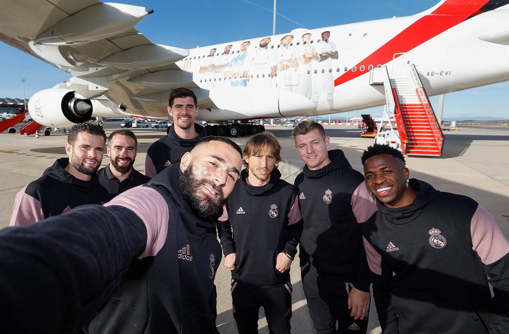
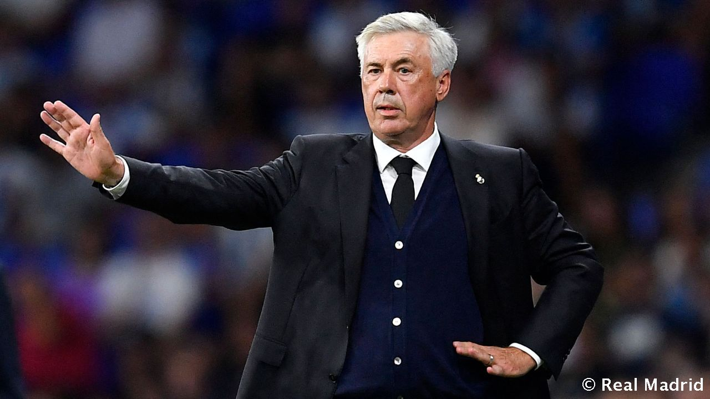

El Real Madrid ya está en Riad para disputar este miércoles (20:00 h, Movistar+) la semifinal de la Supercopa de España contra el Valencia. La expedición madridista partió desde el aeropuerto Adolfo Suárez Madrid-Barajas rumbo al de la capital de Arabia Saudí, donde aterrizó tras un vuelo de seis horas.
A continuación, el equipo se desplazó hasta el hotel JW Marriott, en Riad. Allí permanecerá concentrado durante su participación en la Supercopa de España.
Carlo Ancelotti ha sido premiado como el mejor entrenador de clubes del mundo en 2022 por la Federación Internacional de Historia y Estadística del Fútbol (IFFHS). Con el técnico italiano al frente, el Real Madrid conquistó la Champions, Liga, Supercopa de Europa y Supercopa de España el año pasado.
Es la tercera ocasión que Ancelotti recibe este reconocimiento, tras lograrlo en 2007 (Milan) y 2014 (Real Madrid). Nuestro entrenador superó en la votación de la IFFHS a Guardiola y Regragui.
